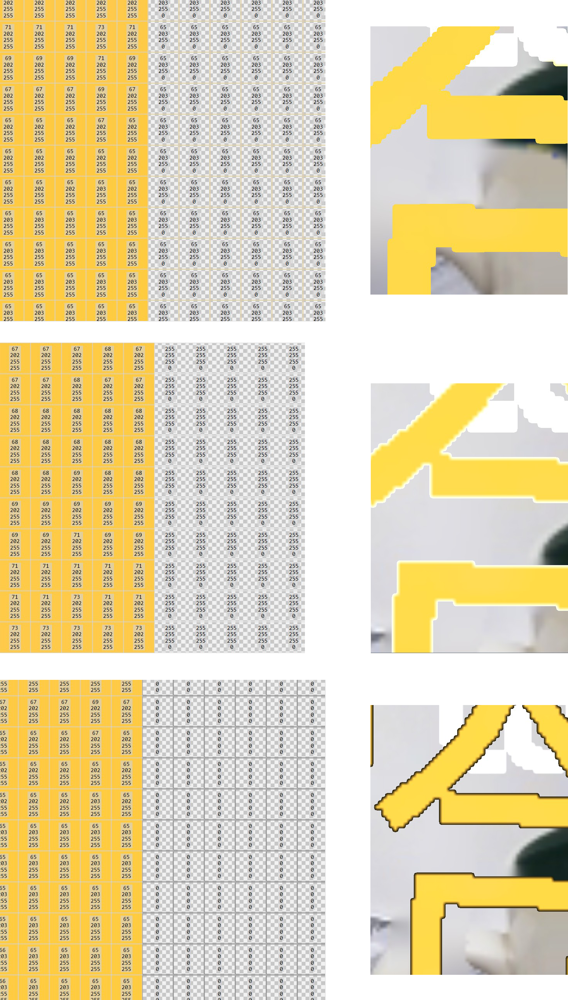

有時候，在處理OpenGL Texture實作上，會出現Texture黑邊問題，這時候，會有哪些解決方向可以去考慮呢?
狀況一
第一種狀況是，OpenGL Blend Parameters參數產生的問題，原本Blend Default參數是這樣設計的。
glEnable(GL_BLEND);
glBlendFunc(GL_SRC_ALPHA, GL_ONE_MINUS_SRC_ALPHA);
但這個狀況下，會可能有黑邊狀況產生，如果把參數設定改成如下
glEnable(GL_BLEND);
glBlendFunc(GL_ONE, GL_ONE_MINUS_SRC_ALPHA);
即可改善問題
glBlendFunc
這邊可以來講解一下glBlendFunc的概念 前一種是傳統的alpha通道混合，這種模式下rgb顏色和alpha值是分開處理的。
在數學上表達式是： $$blend(source, dest) = (source.rgb * source.a) + (dest.rgb * (1 – source.a))$$
要注意的是這種模式下，透明只跟alpha有關，跟rgb值無關，一個透明的顏色，不透明的顏色有相同的rgb值，只要alpha=0即可。
後一種是alpha預乘的混合（Premultiplied Alpha Blending），這種模式下rgb與alpha是聯繫在一起的，數學上的表達式是
$$blend(source, dest) = source.rgb + (dest.rgb * (1 – source.a))$$
在這種模式下，透明的表示是rgb值都為0.
狀況二
第二種狀況，就是Texture上可能產生的Pixel問題
主要是邊界部分，如果alpha channel value = 0，而RGB value = (0, 0, 0)，在OpenGL Render時候把畫面拉大的時候，就會看到邊界值和(0, 0, 0, 0)進行Blend，於是interpolation内插的結果就會產生黑邊。(如第三張圖)
如果邊界值和(255, 255, 255, 0)進行Blend，於是interpolation内插的結果就會產生白邊。 (如第二張圖)
如果邊界值和相同顏色但alpha=0 的 (65, 203, 255, 0)進行Blend，於是interpolation内插的結果就不會有黑邊或白邊了。 (如第一張圖)

狀況三
這種狀況比少見
如果RGB值經過一個one channel的Mask進行Segmentation，但是RGB Image的Size和Mask的Size不一樣，假設RGB得長寬Size 513*513，Mask得長寬Size 256*256，這時候Resize後，就有可能造成一個pixel的誤差，因為RGB的長寬513*513是單數，而那個一個pixel得誤差就有可能就是黑邊的產生了。